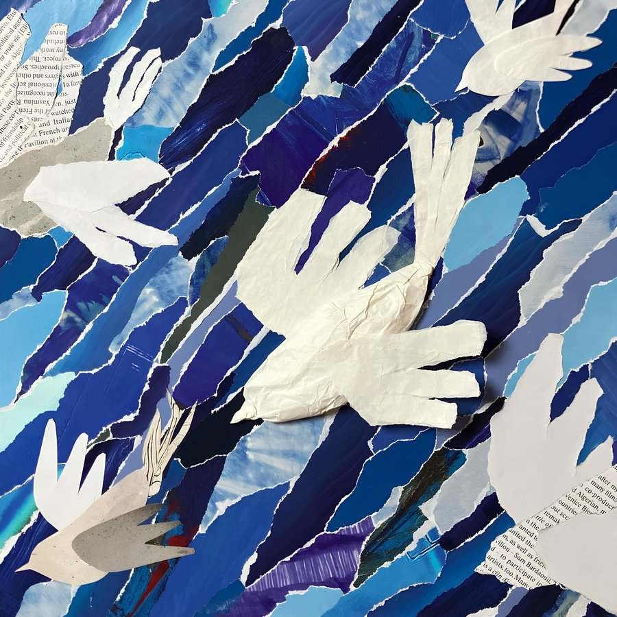

discography

새야 (Birds)
Digital Single
Lyrics by raetim
Composed by raetim
Arranged by raetim
Vocal raetim
Drums Junyoung Shin
Bass Dongin Lee
Electric Guitar Philip Yu
Electric Piano Sion Kwon
Organ Seoyoung Song
BGV raetim, Eunbee Lee, Bumsoo
Vocal Recording Directed by Bumsoo
Vocal, Drums, BGV Recorded by Seungjoo Lee (Mu;te Lab.)
Mixed by LambC at stringshopsound
Mastered by bk! at AB Room
Lyrics by raetim
Composed by raetim
Arranged by raetim, sojucompozer
Vocal raetim
Acoustic Guitar Philip Yu
Electric Guitar Muyeong Maeng
Synth sojucompozer
BGV raetim
Vocal Recording Directed by Bumsoo
Vocal, A. Guitar Recorded by Seungjoo Lee (Mu;te Lab.)
BGV Recorded by sojucompozer at pochastudio
Mixed by sojucompozer at pochastudio
Mastered by bk! at AB Room